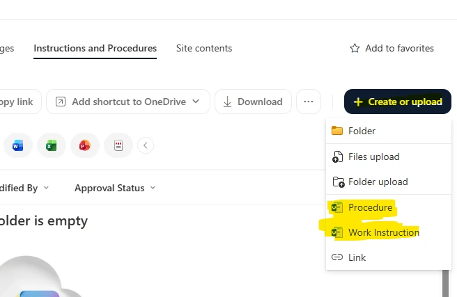
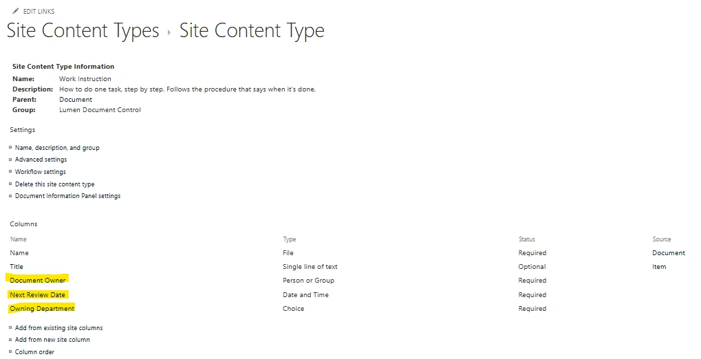
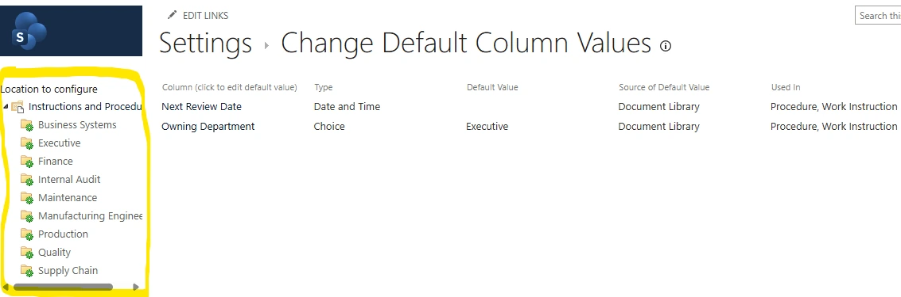
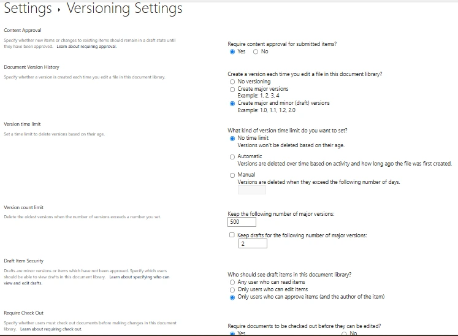
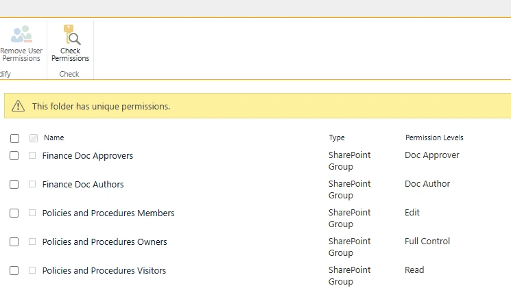
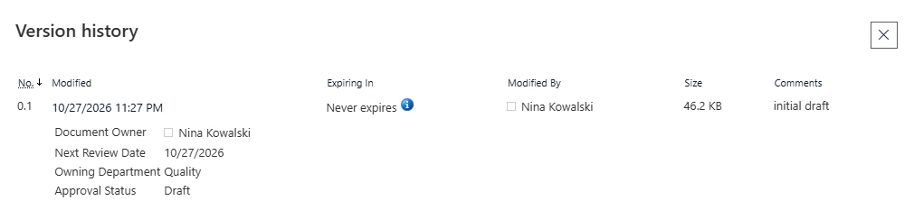
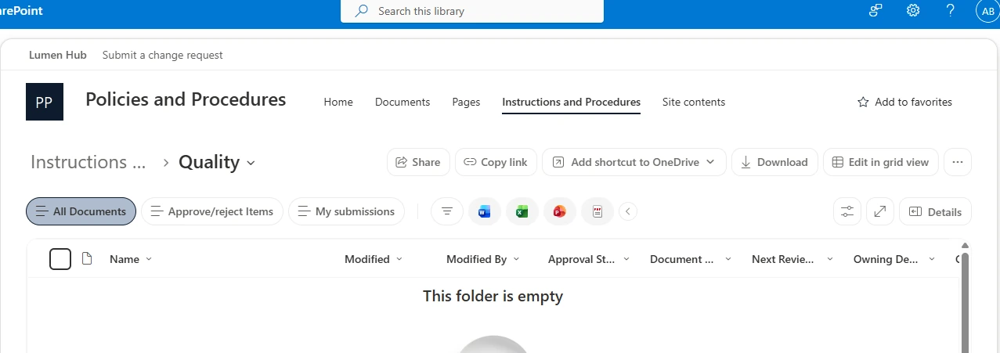
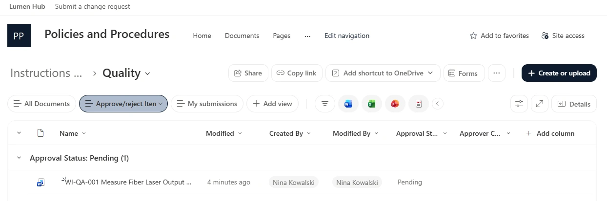
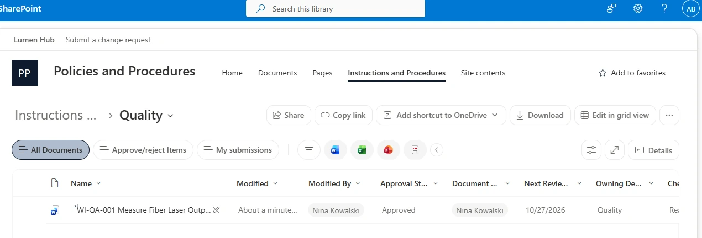

SharePoint administration · ISO 9001 document control · Lumen Photonics lab
Approach highlighted
Releasing only approved revisions. Content types define what a controlled document is, content approval and draft security decide who sees what, and every step was tested as the author, the approver and an operator.
Project Summary
Lumen's Quality Manager, Tom Becker, brought a problem from an ISO 9001 audit: an operator on Line 3 followed an outdated work instruction because an old copy was still on a shared drive. He needed one place where operators only ever see the current approved revision, engineers can revise documents without exposing drafts, every revision is kept with who approved it, and each document is reviewed once a year.
Procedures and Work Instructions
The structure follows the usual quality system hierarchy. The difference between a procedure and a work instruction drove the whole design, so the definitions appear on the site, in the content type descriptions and here.
| Document | Answers | Example at Lumen |
|---|---|---|
| Policy | Why we do it | Every product is tested before it ships |
| Procedure | What we do, who does it and when | Final inspection: every module is power-tested at Plant 2 final test |
| Work instruction | How to do one task, step by step | WI-QA-001: how to measure fiber laser output power |
| Form or record | Proof that it happened | The final test log entry for each serial number |
Where It Lives
A new communication site, Policies and Procedures, owned by Quality and associated with the Lumen Hub so it appears in the shared navigation. Everyone can read it. One library holds a folder per department, and only the department folders that need their own authors break permission inheritance. Reading isn't restricted by department, because an operator may need a Quality instruction and an auditor needs everything; what varies by department is who can write.
Content Types Instead of Subfolders
Procedure and Work Instruction are content types, each requiring a document owner, a next review date and an owning department. A subfolder can't require anything; a content type can, and it lets reports count documents by type later. The generic Document type was removed from the library, so authors can only create one of the two.


Each department folder fills in its own Owning Department automatically through column default values, so nobody types it. The library root has no default on purpose: a file saved outside a department folder has to be assigned one, which makes misfiled documents visible. The column name "Department" was already reserved by SharePoint, which is why it's Owning Department.

How a Revision Stays Hidden
The library requires content approval and keeps major and minor versions. A draft is a minor version (0.1, 1.1) that only its author and the folder's approvers can see. Submitting a major version doesn't publish it; it goes to Pending, still hidden, until an approver releases it. Documents must be checked out before editing, so only one person changes a controlled document at a time, and every check-in carries a comment explaining why.

The Author Never Approves
Two custom permission levels keep writing and releasing separate. Doc Author is Contribute without the ability to delete documents or versions; Doc Approver adds Approve Items. Department head approval matches who is accountable for the process: Quality owns the document control system, not Finance's month-end close.
| Folder | Authors (Doc Author) | Approver (Doc Approver) |
|---|---|---|
| Finance | Grace Lin, Controller | Sandra Whitfield, CFO |
| Production | Derek Shaw (work instructions), Carla Mendes and Dana Reyes (procedures) | Victor Hale, VP Operations |
| Quality | Nina Kowalski, Quality Engineer | Tom Becker, Quality Manager (site owner) |
| Other six | Read-only for everyone and controlled by Quality until the department needs its own authors | |
Access is granted only through SharePoint groups owned by the site's owners, so Quality manages who writes and approves without needing an Entra administrator. Membership is visible to everyone, because employees and auditors should be able to see who is accountable for a procedure.

Testing as Three People
The design was tested with a realistic work instruction, WI-QA-001, signing in as each person in separate browsers. First, Nina checked in a draft. She sees version 0.1; Aisha Bello, a production operator, sees an empty Quality folder.


Nina then submitted it as a major version. It went to Tom's Approve/reject Items queue as Pending and stayed hidden from Aisha. Once Tom approved it, Aisha saw the released work instruction.


What Testing Found
Skills Demonstrated
SharePoint site and library design, ISO-style document hierarchy, site columns and content types, column default values, content approval, major and minor versioning, draft item security, check-out, custom permission levels, SharePoint groups, folder-level unique permissions, segregation of duties, and testing as multiple users.
More from the Lumen Photonics lab